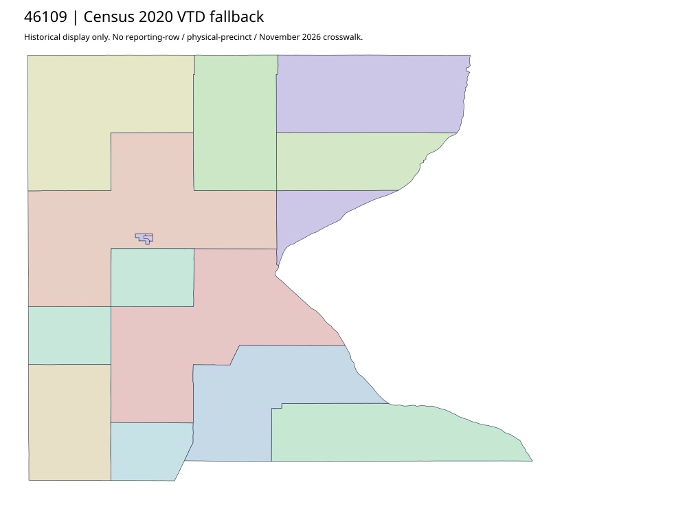

304 ordered indexRoberts | 46109
Official Roberts auditor parent and full recheck acquired. No directly linked precinct map original located in its bounded HTML chain. Public contact fields retained read-only; no outreach. Census2020 complete14 VTD fallback does not match workbook observations by name/count alone.
4 priority / 12 full historical observations. Parent is a summary ancestor, not additive to leaves. No physical feature matches or current reporting crosswalk approved.
Acquired shared-parent assets
No complete county precinct-map original acquired from this bounded chain. Use qualified fallback; roster/landing/error bodies are retained as evidence.
Census2020 fallback
14 native historical VTD features. Entire785-feature ZIP original retained once, all66 counties. Yankton has one countywide VTD. No current/reporting allocation. complete original gzip

Full binary/attribute/geometry QA
Observed authority/acquisition routes
Complete SOS authority fields including original blank/masked values: parent inventory. No contacts were sent.
Ordered full children
- Precinct-11 | 799 source votes | priority
- Precinct-06 (Precinct-07) | 577 source votes | priority
- Precinct-02 | 514 source votes | priority
- Precinct-09 | 493 source votes | priority
- Precinct-05 | 402 source votes | remainder
- Precinct-12 (Precinct-14) | 313 source votes | remainder
- Precinct-13 | 280 source votes | remainder
- Precinct-03 | 202 source votes | remainder
- Precinct-10 | 193 source votes | remainder
- Precinct-01 | 169 source votes | remainder
- Precinct-08 | 115 source votes | remainder
- Precinct-04 | 91 source votes | remainder